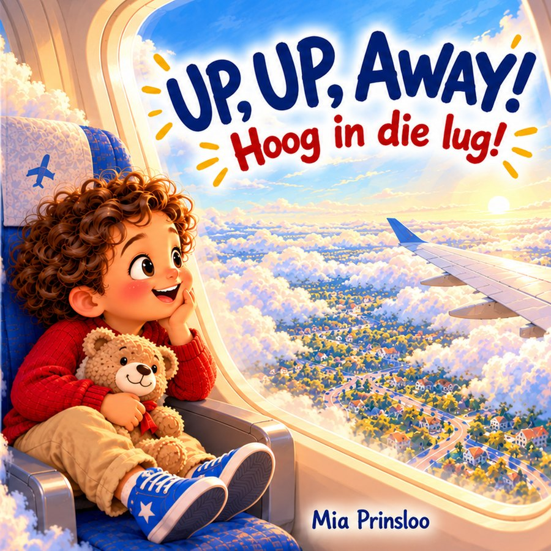
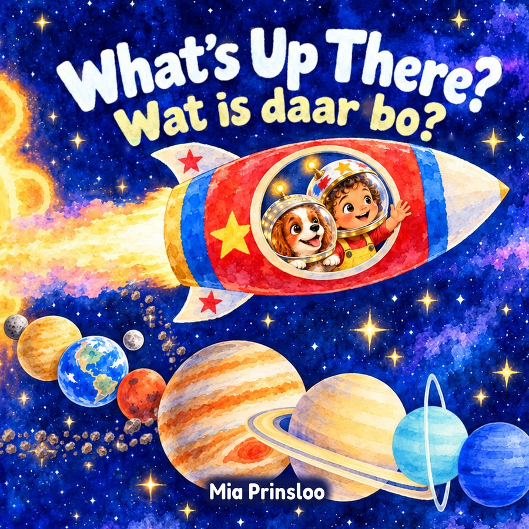
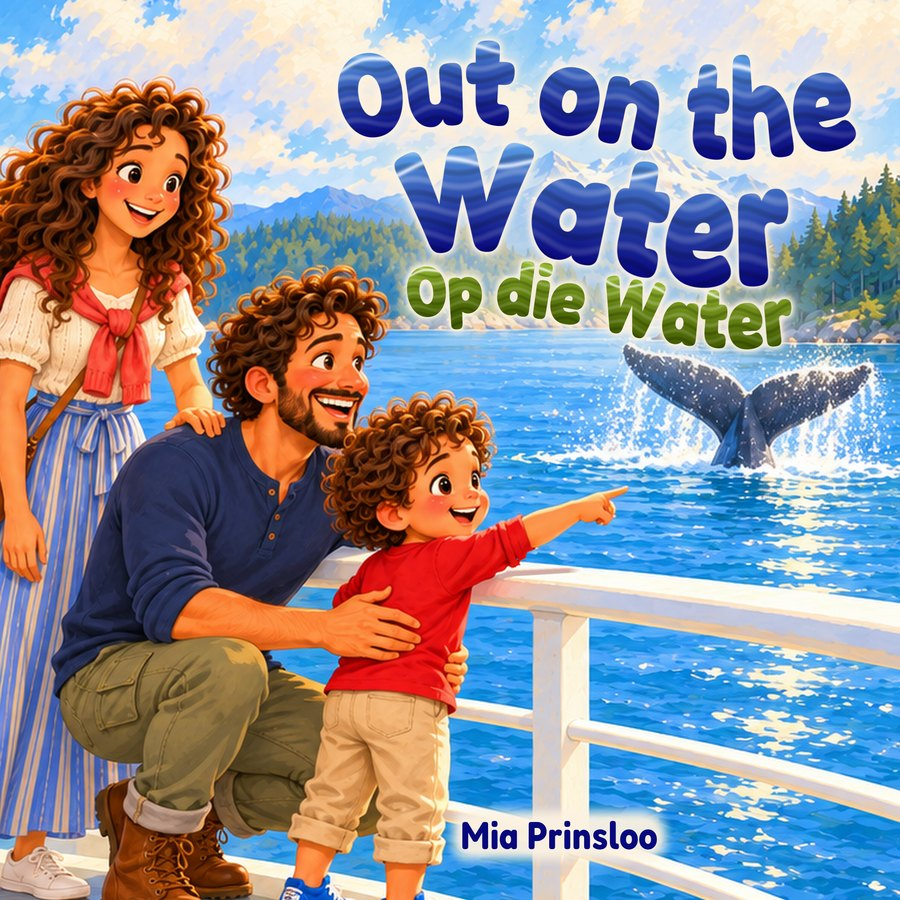

For little ones, ages 0 to 8
Milo's picture books
Warm, funny stories about Milo and his family, in English and Afrikaans.
See the picture books →Picture books and colouring books for little ones. Colouring books for grown-ups.



Warm, funny stories about Milo and his family, in English and Afrikaans.
See the picture books →


Milo colouring books for ages 1 to 12, in English and Afrikaans.
See the kids' books →


Intricate, detailed line art for slow, mindful colouring.
See the colouring books →